| Communicator Seamonkey |
UI Specification
|
|
ダイアログユーザ体験(UE)構成 ニュースグループへフィードバックを投稿 |
最終更新:
2001/03/21(水) 06:30:25
|
| 著者 German W. Bauer 最初の作成日: 1999年4月09日 |
状態: 準備段階の仕様 - ご自身のリスクでお使いください。実装情報はまた次の機会に。 |
クイックリンク:
Seamonkeyの全体的なUIホームページ |
チーム構成 |
古い仕様は更新されている可能性があります。 |
要旨/概要
この文書はクロスアプリケーション(およびクロスアプリケーションにできる箇所)のダイアログレイアウト、 および標準のテンプレート/カテゴリーの範疇に入らないダイアログを作成するための一般的なガイドラインについて記述しています。目標
- ダイアログについて、アプリ・プラットフォーム全体で一貫性を保ちます。(Communicator Seamonkey の起動後、機能が動的に追加された場合でも)
- 使用感をテストして必要とされた/証明された時は、プラットフォームの特性を考慮します。 たとえばコマンドボタンの配置など。
- テンプレートを使い、共通ダイアログの一貫した実装をできるだけシンプルにできるようにします。
- 結合可能なモジュールとウィジェットを使い、特別なダイアログの一貫した作成をできるだけシンプルにできるようにします。
ターゲットユーザ
この機能のターゲットユーザーは、Seamonkey PRD に記述されている全ての Communicator Seamonkey ユーザです。
ユーザ作業
初級 中級 上級 データ表示面全てに共通します
- 設定などの、メインとなる作業に次ぐ補助的な作業を行います。
- エラーメッセージや、悪い影響を及ぼす可能性のある動作の情報を得たり、 情報を提供するメッセージを得たりします。
キーボードだけでダイアログを操作してみます。
設計早見表
設計哲学
Web のルック＆フィール
Seamonkey は、プラットフォームから独立したルック＆フィールを備えた最初のアプリケーションになるでしょう。 このために、ダイアログのセットは Macintosh と Windows で同一になります。 コマンドボタンの並びをクロスプラットフォームにするか、Macintosh・Windows・Linuxそれぞれに委ねるかについては、 結論を得ていない問題となっています。 いずれにしても、柔軟でモジュール化されたものに設計することにより、 そのようなプラットフォーム別の並び順を持つボタンも２・３回設計し直すことなく実装することが可能になります。
昔からの OS に基づいたリソース体系でのダイアログ設計と異なる点としてもう１つ、 置き場所の固定されたシステムには頼らず、 各要素が HTML 4 と同じように設計されるというのがあります。 その一方で、使用するフォントやローカリゼーションの影響を受けます。
ダイアログの詳細
モードレスおよびモーダルなダイアログボックス
ダイアログはモードレスにもモーダルにも、移動可能なモーダルにもなることができます。
どんな時にどれを組み込めばいいでしょうか。
| モーダルダイアログ | モードレスダイアログ | 移動可能なモーダルダイアログ | フローティングパレット |
| モーダルダイアログは、それを閉じるまで他の全てのアプリケーションとの対話を禁止します。 | そのアプリケーションも含めどのアプリケーションとも自由に対話できるものですが、 そのアプリケーションの 'カレントの' ウィンドウとの関連は持ったままです。 (その点で後述のフローティングパレットとは異なります) | 他のアプリケーションへ切り替えることはできても、 同じアプリケーションの他のウィンドウへ切り替えることはできないようにします。 | 全てのドキュメントウィンドウの手前に位置し、 設定の変更を対話的にできるようにします。 追いやることができませんが、設定の変更はすぐにドキュメントに反映されます。 同様に、現在選択されているものを反映させるために、設定の表示を更新します。 この機能は、パレットウインドウとしてもツールバーとしても表示することが可能です。 |
|
|
|
|
ダイアログボックスタイプ
ダイアログボックス
何度も元に戻ることを必要としない周辺的な作業に使用します。 ダイアログボックスは、ナビゲーションのためにタブを使ったり、 設定を操作するのにコントロールを使ったり、 元に戻る時や設定を確定する時のためにコマンドボタンを並べて使ったりすることができます。 XPFE の実装では、ダイアログのウィンドウフレームはネイティブなものを使用しますが、 制御は Gecko を通して行われます。
例:
警告ダイアログボックス
通知する時に使用します。 アプリケーションで起きた致命的なエラー、警告、その他のアドバイス(後述)などがあります。 アイコンで警告の性質を識別し、通常はそれに伴ってテキストを記述します。 下のほうに並べるコマンドボタンは以下のものをいくつかまたは全て使用します。 つまり、OK ボタン(メッセージの承認や動作の確認を行う)、キャンセルボタン(その動作を行わない)、ヘルプボタンです。
| 情報 | 問い合わせ | 警告 | 致命的なエラー |
例: SSL 通信に入る時の警告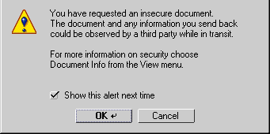
チューザー(chooser)/セレクター
フォントや色を選び出すことができます。プレビューを入れることもできます。 ファイル選択など、ネイティブなダイアログを使用することになる場合もあります。 変更を何度も行う必要がないものを選ぶ時に使用してください。
例: ファイル選択
プロパティダイアログ
これを使うことにより、現在の状況や選択しているものの属性を調べたり変えたりすることができます。
- 変更のフィードバックが直接かつ何度も必要となる時、あるいは
そのダイアログの作業が文書ダイアログの作業と直接つながっている時は、全ての文書ウィンドウの手前に表示するフローティングパレットまたはツールバーと一緒に使用します。
例: エディタウィジェット 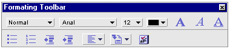
- 変更のフィードバックを直接必要としない時や、メインウィンドウの作業と直接つながっていない変更を行う時は、メインのインタフェースを乱さなくて済むよう、移動可能なモーダルダイアログと一緒に使用します。
例: 設定ダイアログ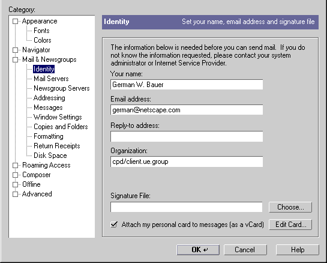
設計詳細
一般的なダイアログレイアウト構成
ダイアログは全て、同じようなダイアログモデルに従い、次の３つの主要なセクションに分かれています。
| 内容エリア。必要とされる幅を基に、サイズ変更が可能なウィジェットまたはメッセージテキストがあります。 |
| 横方向のコマンドボタンエリア。プラットフォームに基づいたもので置き換えることができます。 表示位置: 下 最小の高さ: 30 ピクセル |
| オプション: ブランドエリア。 ダイアログの所有者/発行元を区別します。(コンポーネントを基準とした世界では重要かもしれません) 表示位置: 左 最小の高さ: 30 ピクセル |
| |
|
一般的なマージンと揃え方向
ダイアログとコンポーネントの間に空けるスペースの推奨値は次のとおりです。
下と左のマージンは 11 ピクセル、上と右のマージンは 10 ピクセルを推奨します。
ダイアログウィンドウの一般的なスタイルシートは次のようになります。
#body {margin-left: 11px; margin-right: 10px; margin-top:10 px; margin-bottom:11px; background-color:#CCCCCC; font: message-box;}
フォントタイプ - フォントの使用法
フォントタイプの使用規則は単純なものです。
ダイアログは特定のフォントサイズ指定よりも、スタイルシートの指定の方に合わせられます。
デフォルトでは、私たちは CSS2 の "font: message-box;" をダイアログに指定します。
太字(ボールド)は使用しないで下さい。
イタリックも使用しないで下さい。
エディットフィールドに続くテキストは右揃えして下さい。
テキストラベルは短めになるよう心がけましょう。
特定ウィジェットのマージンと揃え方向
私たちは、プラットフォームが異なればフォントサイズも異なり、 ロケールが異なればテキスト長も異なるだろうと思っています。 私たちが使っているのは、 (説明するために単純に考えれば) HTML に多少似ている柔軟性の高い XUL アーキテクチャ(と書くと撞着語法になるでしょうか?)です。 従って、ダイアログ用にグリッドの固定したシステムは指定しないで、 大きいフォントサイズや長いテキストの時に大きくなり、 小さい幅で済む時に小さくできるような柔軟で拡張性の高いシステムを考え出すのがベストでしょう。 私たちはそれを目指して、Hyatt と Vaughan が作ったボックスレイアウトシステムを使おうとしているところです。 これに照らし合わせれば、コントロールの位置を x と y の絶対座標で指定しないで、 それぞれの相対的な間隔やグルーピングを調整する意味が出てきます。
スタイルシートを使うことにより、コントロール自身が必要な余白を把握できます。 私たちはその方法で、最もよく使われるコントロールとそれらの間で必要となる最低限の間隔、 および必要に応じてグルーピング時の間隔についてここで記述していきます。 要するに、各ウィジェットの周りの「バッファゾーン」の設計を行います。 ここに書いたのは、デフォルトの見え方の基本的なスタイル属性です。 ボタンであれば、普通の状態、つまり押せる状態かつ押されていない状態で表しています。
(訳注: 撞着語法とは、本来は矛盾する意味の言葉同士をつなげて「熱い氷」のような表現を作る方法です。原文では「flexible」と「architecture[建築様式、建造物]」を指して言っているものと思われます。)
コマンドボタン
| 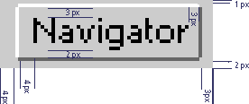 | margin-left: 4px; margin-right: 3px; margin-top: 1px; margin-bottom: 2px; border: 1px outset #CCCCCC; padding-left: 4px; padding-right: 3px; padding-top: 3px; padding-bottom: 2px; background-color: #CCCCCC; |
ボタンの最小幅は 60 ピクセルほど必要です。
(これをスタイルシートや Gecko でどう表すかについてはまだわかりません)
全てのボタンの幅は、コマンドボタン行にある内側の余白が上に示した最も大きいボタンの幅に合うように、
その幅に合わせようとしています。
イメージボタン
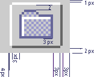 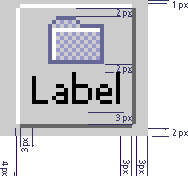 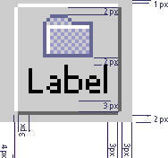 |
|
| margin-left: 4px; margin-right: 3px; margin-top: 1px; margin-bottom: 1px; border: 1px outset #CCCCCC; padding-left: 3px; padding-right: 3px; padding-top: 2px; padding-bottom: 2px; background-color: #CCCCCC; |
テキストラベル
| 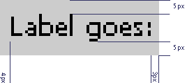 | margin: 0px; border: none; padding-left: 4px; padding-right: 3px; padding-top: 5px; padding-bottom: 5px; background-color: #CCCCCC; |
テキストエディットフィールド
| 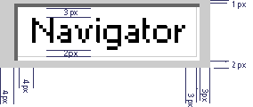 | margin-left: 4px; margin-right: 3px; margin-top: 1px; margin-bottom: 2px; border: 1px inset #CCCCCC; padding-left: 4px; padding-right: 3px; padding-top: 3px; padding-bottom: 2px; background-color: #FFFFFF; |
コンボボックス
| 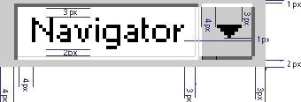 | margin-left: 4px; margin-right: 3px; margin-top: 1px; margin-bottom: 2px; ほかは未決 |
ポップアップメニューボタン
| 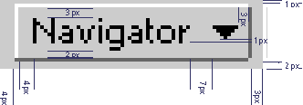 | margin-left: 4px; margin-right: 3px; margin-top: 1px; margin-bottom: 1px; border: 1px outset #CCCCCC; padding-left: 4px; padding-right: 3px; padding-top: 3px; padding-bottom: 2px; background-color: #CCCCCC; |
選択リストボックス
| 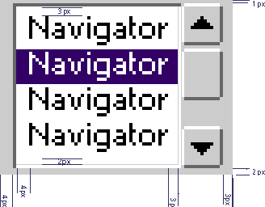 | margin-left: 4px; margin-right: 3px; margin-top: 1px; margin-bottom: 1px; ほかは未決 |
チェックボックス
| 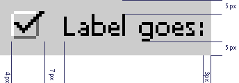 | margin-left: 4px; margin-right: 3px; margin-top: ???px; margin-bottom: 5px; border: none; padding: 0px; background-color: #CCCCCC; |
ラジオボタン
| 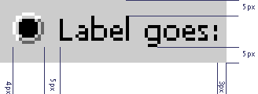 | margin-left: 4px; margin-right: 3px; margin-top: ???px; margin-bottom: 5px; border: none; padding: 0px; background-color: #CCCCCC; |
プログレスバー
| 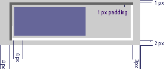 | margin-left: 4px; margin-right: 3px; margin-top: 1px; margin-bottom: 2px; border: 1px inset #CCCCCC; padding: 1px; background-color: #CCCCCC; |
横線を使ったグルーピング
| 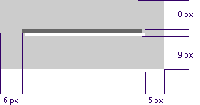 | margin-left: 6px; margin-right: 5px; margin-top: 8px; margin-bottom: 9px; border: none; padding-left: 3px; padding: 0px; |
グループボックスを使ったグルーピング
| 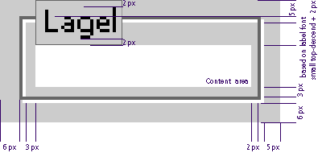 | margin-left: 6px; margin-right: 5px; margin-top: 5px; margin-bottom: 6px; border: 2px ridge #CCCCCC; padding-left: 3px; padding-right: 2px; padding-top: ???; padding-bottom: 3px; |
典型的なコマンドボタン
OK ボタンとキャンセルボタン
適用ボタン
ヘルプボタン
ダイアログのデフォルトボタン
コモンダイアログのテンプレート
例: 設定ダイアログ面
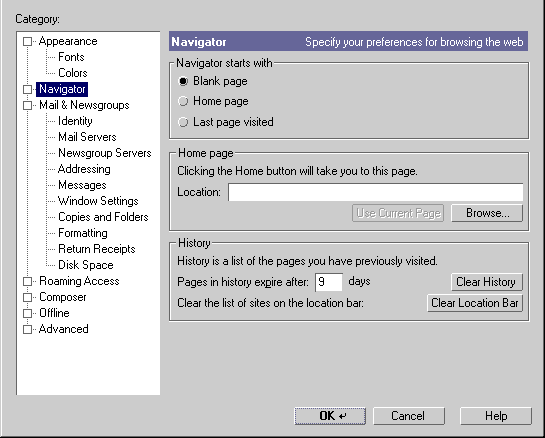
例: 質問ダイアログ
次の例は、プラットフォーム特有のコマンドボタンの並び順を持つダイアログが、 XULで一番下に代わりのコマンドボタン領域を設けるというモジュール化手法を使ったらどのような見え方になるのかを示しています。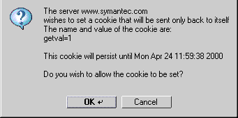 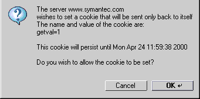
問題 |
XUL/XPFE の可能性に関する問題:
本文の必要とする高さと幅に合わせてダイアログの幅を自動調整する必要がある。
XPFE は何ができるのか: モーダルは? 移動可能モーダルは? モードレスは? パレットは?
コマンドボタンの位置決め(訳注:原文は「div」としか書いていません)などのためにプラットフォーム特有の部分的な XUL が必要。
行うべきこと: 仕様は外側をフレンドリーなものにする必要あり。そのためのグローバルで共有するスタイル属性も必要。